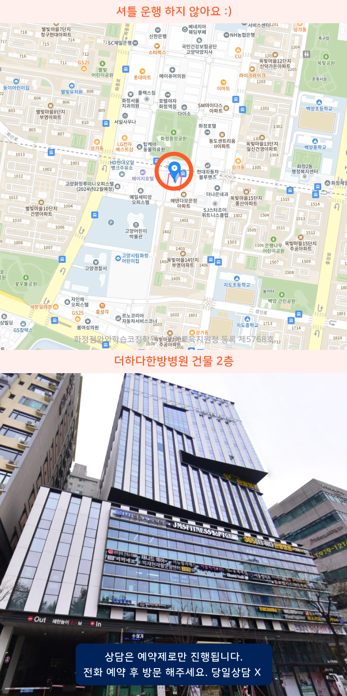

Area
화정역 고등학생학원
화정역과 가까운 화정동에서는 고등학생을 위한 학원 상담이 꾸준해요. 화정로데오 일대도 학습 계획을 세우고 성적 흐름을 점검하기 좋고, 토당동 역시 내신 대비 방식과 시간표를 함께 조정하는 편입니다. 진단을 바탕으로 개별 진도와 오답 정리 확인이 잘 되는지 알아보세요. 통학이 편한 시간대 편성도 꼼꼼히 비교하면 좋아요.
화정역 고등학생학원은 영어·수학·국어를 내신대비 중심으로 개별진도에 맞춰 지도하고, 학습관리와 학습코칭으로 방향을 함께 점검합니다. 초·중 과정도 단계별 학습을 지원합니다.
무료 레벨테스트 신청하기Area
화정역과 가까운 화정동에서는 고등학생을 위한 학원 상담이 꾸준해요. 화정로데오 일대도 학습 계획을 세우고 성적 흐름을 점검하기 좋고, 토당동 역시 내신 대비 방식과 시간표를 함께 조정하는 편입니다. 진단을 바탕으로 개별 진도와 오답 정리 확인이 잘 되는지 알아보세요. 통학이 편한 시간대 편성도 꼼꼼히 비교하면 좋아요.
Schools
화정역 인근 고등학생학원은 백양중과 능곡중 내신 대비와 백양고 진학 준비를 위해 수업 후 오답정리로 주간 학습계획과 점검으로 성취도를 관리합니다.
Academy
화정동에서 고등학생학원을 찾는 분들이 가장 먼저 마주하는 문제는 과목별로 공부한 시간은 많은데 점수가 들쑥날쑥하다는 점입니다. 보통은 시험이 가까워지면 범위를 다시 훑고 넘어가서 오답이 누적되는데, 왜 틀렸는지와 같은 학습의 원인이 분리되지 않기 때문입니다. 화정역이나 화정로데오 주변에서 학원을 알아볼 때도, 단순히 진도만 맞추는지보다 학생이 어디에서 막히는지 진단해주는 구조가 있는지가 중요합니다.
예를 들어 백양중, 능곡중을 거치며 기본 개념은 어느 정도 익혔는데 고등 단계에서 적용 문제가 늘어날 때, 읽고 푸는 습관과 확인 루틴이 흔들리곤 합니다. 특히 능곡고처럼 과목 간 난이도 차이가 커지는 시기에는 신능중, 지도중과 같이 학습 편차가 드러나는 학생일수록 계획서에 단순 일정이 아니라 문제 유형별 점검 항목을 넣어야 합니다. 토당동에서도 마찬가지로 같은 수업을 들어도 결과가 달라지는 핵심은 복습 방식과 오류 기록의 질입니다.
과목별로도 관리가 달라집니다. 수학은 오답을 유형별로 분류해 다음 문제에서 같은 실수를 반복하지 않게 연결해야 하고, 국어는 지문 독해 후 선택 이유를 문장으로 정리해 채점 기준에 가까워져야 합니다. 영어는 단어 암기만으로 끝내기보다 문장 단위로 재사용해 다음 시험에서 적용되는지 확인하는 과정이 필요합니다. 지도초나 화정초에서 만들어진 습관을 고등 과정에 맞게 다시 설계해야, 무원고나 백양고 같은 목표 학습에서도 흔들리지 않습니다.
그래서 학원을 고를 때는 위치만 보지 말고, 화정역 고등학원처럼 접근성이 좋은 곳이라도 오답 관리가 체계적인지, 플래너와 점검이 실제로 학생 행동으로 연결되는지, 수업 이후에 무엇을 확인하는지까지 일관되게 설명되는지 살펴보는 게 좋습니다. 능곡고나 백양고 인근 학생들도 결국은 같은 기준으로 점검할수록 시행착오가 줄어듭니다.

Programs

목표 점수와 시험 일정을 기준으로 주간 학습량을 설계하고, 매일 실천 가능한 플래너 루틴을 잡아줍니다.

학생별 이해도에 맞춘 개념 설명, 유형 적용, 반복 훈련, 오답 정리로 부족한 단원을 보완해나갑니다.

하원 이후에도 과제 수행률 확인과 학원 밖 공부 습관까지 이어갑니다.


자기주도학습력을 형성 시킬 수 있도록 플랜, 학습, 숙제관리가 들어갑니다.

Map

Apply
순차적으로 연락드려 예약 도와드립니다.
Guide
| 횟수 | 초등 | 중등 | 고등 |
|---|---|---|---|
| 주 5회 | 339,000원 | 336,000원 | 419,000원 |
| 주 4회 | 279,000원 | 301,000원 | 344,000원 |
| 주 3회 | 219,000원 | 236,000원 | - |
| 횟수 | 초등 | 중등 | 고등 |
|---|---|---|---|
| 주 5회 | 389,000원 | 416,000원 | 469,000원 |
| 주 4회 | 319,000원 | 341,000원 | 384,000원 |
| 주 3회 | 249,000원 | 266,000원 | - |
학년, 과목, 수업 시수, 지역에 따라 수업료가 달라질 수 있습니다.
학교별 교과 진도와 시험 범위를 분석해 주요 개념과 출제 유형을 체계적으로 학습합니다. 학생의 취약 단원과 반복되는 실수를 집중적으로 점검하고, 서술형과 고난도 문제까지 단계적으로 대비하며 목표 등급에 맞는 학습을 진행합니다.
영어는 독해력과 문제 유형별 접근 능력을 강화하고, 수학은 핵심 개념을 바탕으로 응용력과 문제 해결력을 높입니다. 국어는 문학과 독서 지문 분석을 중심으로 학습하며 모의고사 결과를 활용해 부족한 영역을 보완하고 실전 감각을 길러갑니다.
학생의 현재 성적과 목표 대학, 학습 가능 시간을 고려해 우선순위를 설정합니다. 내신 시험과 모의고사 일정을 반영해 과목별 학습량을 조절하고, 진도와 복습 상태를 꾸준히 확인하며 효율적인 입시 준비가 이루어지도록 관리합니다.